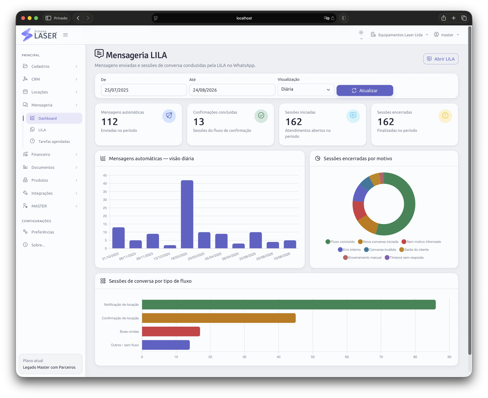
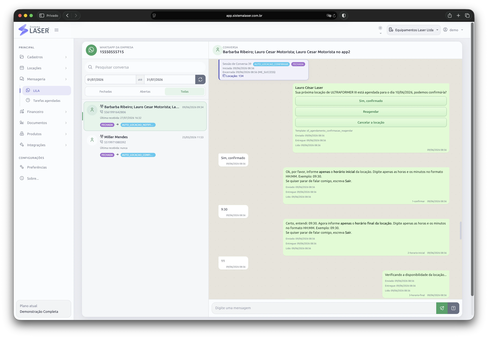

Notificar
A LILA envia a mensagem no momento previsto pela operação.
A LILA envia notificações e conduz fluxos automáticos de confirmação de agendamentos, liberando sua equipe para captar novos clientes e desenvolver a base atual.

A automação executa o processo definido e mantém cada sessão de conversa registrada para acompanhamento.
A LILA envia a mensagem no momento previsto pela operação.
O fluxo conduz as respostas necessárias para o agendamento.
A sessão termina com conclusão, timeout, erro ou outro motivo.
A LILA não substitui o relacionamento: ela assume tarefas repetitivas para que as pessoas cuidem das atividades que exigem conversa, negociação e iniciativa comercial.
O fluxo automático reduz a dependência de confirmações feitas manualmente uma a uma.
As pessoas ganham tempo para atender situações que realmente precisam de atenção humana.
A rotina comercial pode concentrar esforços em captação, negociação e novas oportunidades.
Com menos tarefas operacionais, sobra espaço para fortalecer o relacionamento com clientes atuais.
O dashboard separa a quantidade de mensagens automáticas das sessões de conversa conduzidas pela LILA.
Mensagens representam os envios realizados. Sessões representam cada conversa, que pode ser concluída corretamente, encerrada por falta de resposta, finalizada com erro ou direcionada por outro motivo previsto no fluxo.

A LILA usa a integração oficial com o WhatsApp Cloud e trabalha junto da agenda e das locações do Sistema Laser.
A página de integração explica o cadastro da conta do WhatsApp Business e os requisitos para iniciar a conexão.
Na demonstração, aplicamos notificações, sessões e fluxos de confirmação ao processo da sua empresa.